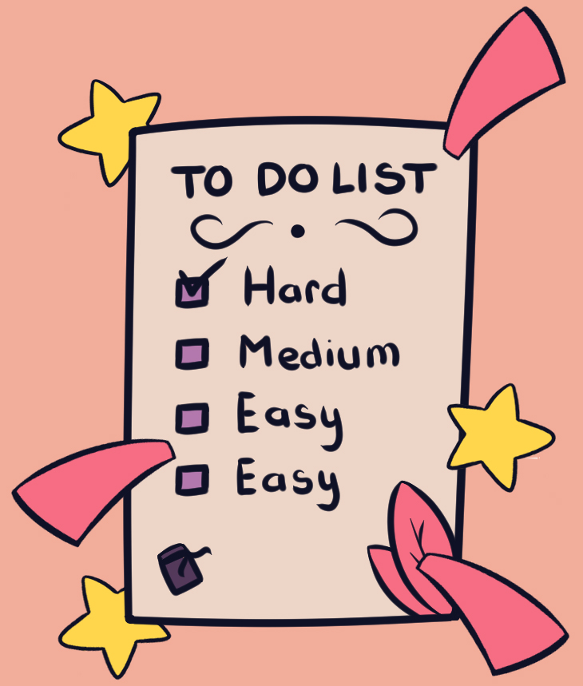
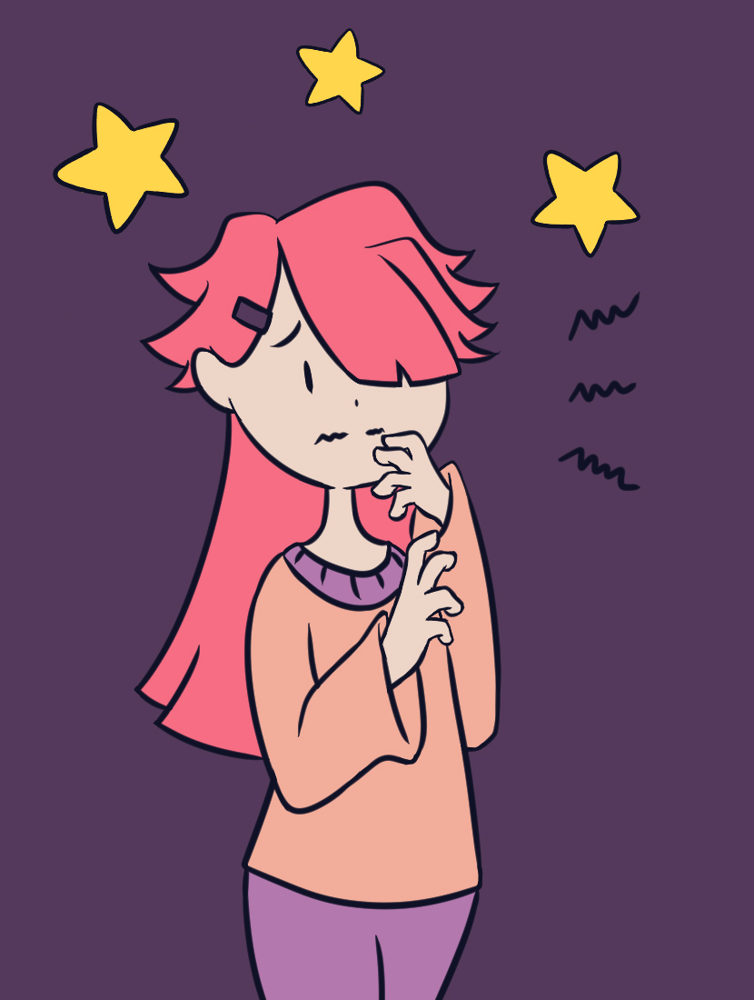

Khi ý tưởng
không đến từ "hư vô"
không đến từ "hư vô"
Giữa thời đại mà công nghệ, khoa học cũng như kỹ thuật đang phát triển như vũ bão.
Ai cũng cần phải học cách đối diện với thực tại luôn thay đổi không ngừng.
Ai cũng cần phải học cách đối diện với thực tại luôn thay đổi không ngừng.
Blog Tin tức
Có một thực tế, sự sáng tạo không tồn tại bất kì con đường rõ ràng nào dẫn đến nó. Mỗi chúng ta luôn có hướng đi cho riêng mình. Không phải cứ người kia đã thành công với cách làm đó, thì bạn có thể áp dụng giống hệt vào trường hợp của mình. Cách tốt nhất ở đây là bạn nên tổng hợp, tham khảo nhiều ý kiến nhất có thể để chắt lọc và đưa ra được lựa chọn phù hợp cho vấn đề đang vấp phải.
Cái gì khó thì làm trước!
Khi nghe người khác trình bày các ý tưởng, thoạt đầu bạn sẽ thấy chúng có vẻ đột phá, sáng tạo, nhưng lúc bình tâm và tìm hiểu cặn kẽ thì dường như các ý tưởng đó không khả thi chút nào.
Đừng lầm tưởng sáng tạo là phát minh ra những ý tưởng mới lạ, mà là làm sao giải quyết được các vấn đề hiện tại một cách thực tiễn nhất.
Nhiều người nghĩ rằng họ không sáng tạo là vì họ không nghĩ ra được cái gì mới mẻ, nhưng điều đó hoàn toàn sai lầm, họ chỉ không gắn bó đến cùng với một vấn đề nan giải cho đến khi nó được giải quyết triệt để.
Đừng lầm tưởng sáng tạo là phát minh ra những ý tưởng mới lạ, mà là làm sao giải quyết được các vấn đề hiện tại một cách thực tiễn nhất.
Nhiều người nghĩ rằng họ không sáng tạo là vì họ không nghĩ ra được cái gì mới mẻ, nhưng điều đó hoàn toàn sai lầm, họ chỉ không gắn bó đến cùng với một vấn đề nan giải cho đến khi nó được giải quyết triệt để.

▋
▋
Ai cũng cần đối diện với
thực tại đang luôn thay đổi!
thực tại đang luôn thay đổi!

Đôi khi mọi người
chưa sẵn sàng!
chưa sẵn sàng!
Khi Alexander Fleming lần đầu khám phá loại thuốc kháng sinh, không một ai quan tâm đến. Còn Xerox làm ra được chiếc máy tính đầu tiên, chính hãng cũng không ngờ nó là nền tảng cho những chiếc Macbook hiện nay. Khi Jim Allison đưa ra ý tưởng về giải pháp trị liệu trong ung thư miễn dịch (cancer immunotherapy), không một ai đầu tư cho ông.
Chúng ta luôn cứ nghĩ, những ý tưởng xuất chúng thường rất lớn lao hay to tát, nhưng thực tế bạn thường bỏ những thứ rất đỗi “bình thường” như thế đấy. Một ý tưởng phải trải qua rất nhiều giai đoạn, từ lúc kêu gọi vốn hỗ trợ, thực tiễn được trong một lĩnh vực cụ thể nào đó, và kết hợp với nhiều ý tưởng khác nhau trước khi thực sự lan tỏa được sự ảnh hưởng đến cộng đồng.
Nên nhớ rằng, không có bất kỳ một phát minh kỳ diệu nào đến từ một sự kiện đơn lẻ duy nhất. Qua hàng chục năm tìm tòi, nghiên cứu, phát triển, một ý tưởng tuyệt vời mới có thể thành hiện thực.
- Lăng Thanh Tú -
Chúng ta luôn cứ nghĩ, những ý tưởng xuất chúng thường rất lớn lao hay to tát, nhưng thực tế bạn thường bỏ những thứ rất đỗi “bình thường” như thế đấy. Một ý tưởng phải trải qua rất nhiều giai đoạn, từ lúc kêu gọi vốn hỗ trợ, thực tiễn được trong một lĩnh vực cụ thể nào đó, và kết hợp với nhiều ý tưởng khác nhau trước khi thực sự lan tỏa được sự ảnh hưởng đến cộng đồng.
Nên nhớ rằng, không có bất kỳ một phát minh kỳ diệu nào đến từ một sự kiện đơn lẻ duy nhất. Qua hàng chục năm tìm tòi, nghiên cứu, phát triển, một ý tưởng tuyệt vời mới có thể thành hiện thực.
- Lăng Thanh Tú -
Có thể bạn cũng thích?